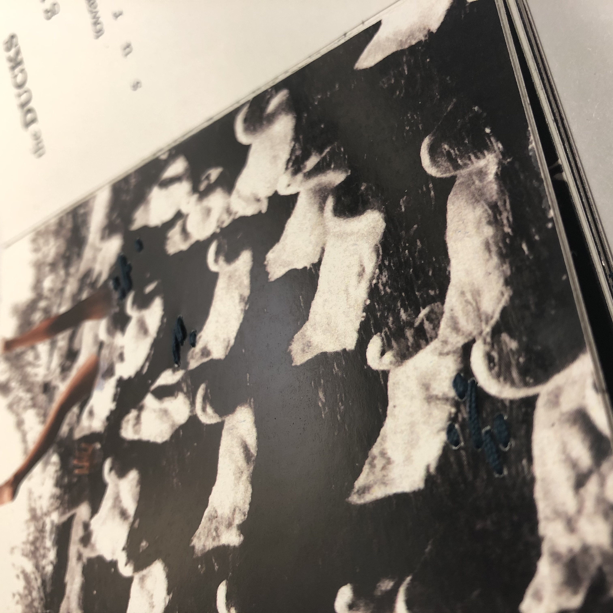
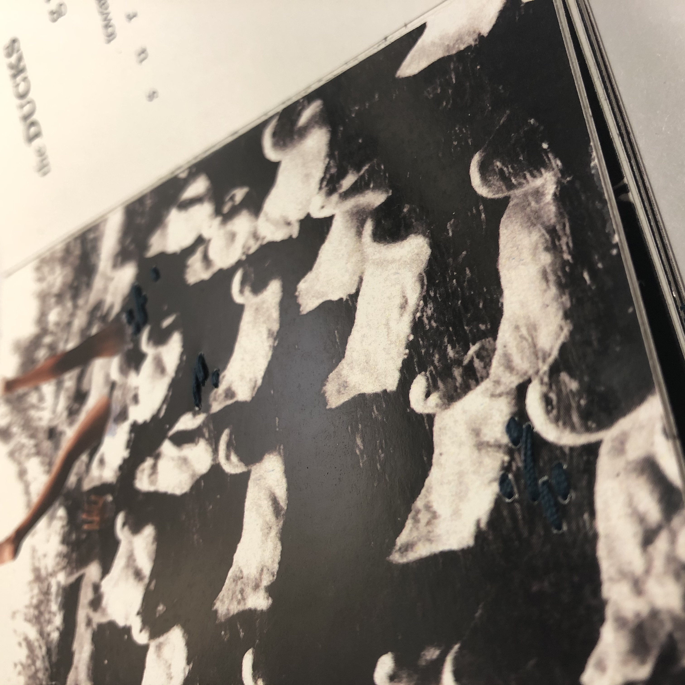

Design Process
We were tasked to take a look at and use photos at the NYPL photo collection, and I happened to come across these folders of duck pictures. I thought it was intriguing so I just ran with it. And I knew I wanted to do something about life, death, rebirth, and the life cycle so I just encorporated the ducks into my imagery.In my narrative, I wanted the ducks to represent the different stages of the life cycle, starting with a single duck and person, increasing in number to overtake that one human, and eventually subsiding and returning to the original balance with duck and human, using the same picture of the person from the first page pointing to a cyclical process.
In terms of text, we were to find a relevant article online and take words directly from that to construct the writing.
Images were composited in Photoshop, text and page layouts were done in InDesign. Composition of the text was made to be more illustrative and performative than textually informational. The layouts were printed, trimmed, and glued onto bristol paper folded into an accordion book.
We had to additionally add a component of our own handiwork to this book, so I decided to embroider some embellishments into the pages to add tactile texture. I used blue string to emphasize the water and contrast the orange skin tones. I varied the color in accordance to the tone of the page, starting with a bright blue for "birth", going to black for "death" and returning to the bright blue for "rebirth", using a dark teal in between. The back of the embroidery of the first pages howed up on the title page, which was unplanned, but I think kind of looks like duck tracks and adds more interest to the empty page.
 
